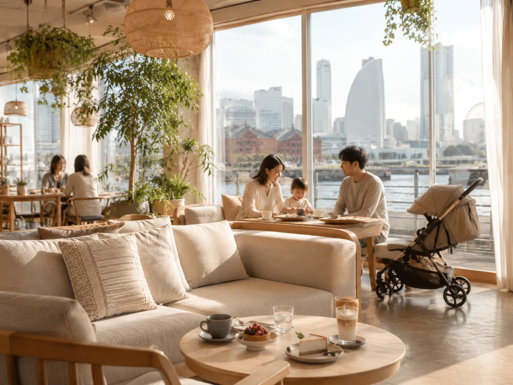

KIBUN MAGAZINE
休日のヒントを、
読んで見つける。
子どもとでも、大人だけでも、ひとりでも。検索条件では拾いにくい「こんな一日いいな」を、小さな特集にしました。流行の速報ではなく、何度でも使える休日のアイデアを中心に集めています。

海、観覧車、クラシックホテル。ティータイムそのものを目的地にする横浜の午後。
読む →WITH KIDS · YOKOHAMA子どもとでも、ちゃんとくつろげる。横浜のカフェ7選遊んだあとに親も座ってひと息。小上がり、家族で入りやすいレストラン、海辺のカフェなど、横浜の一日に余白をつくる7店。
読む →2–3 HOURS · YOKOHAMA2〜3時間だけ空いた日に。横浜の小さな休日6選丸一日は空いていない。でも家にいるだけではもったいない。そんな日に、横浜で2〜3時間を気持ちよく使える場所を集めました。
読む →RAINY DAY · TOKYO雨の日の東京。親子で楽しめる室内スポット7選雨でも「仕方なく室内」ではなく、むしろ今日だから行きたい場所へ。親子で楽しみやすい東京の屋内スポットを選びました。
読む →
美術館だけで帰らず、見たものの余韻を持ったままカフェへ。アートと食事を近いエリアでつなぐ半日のヒント。
読む →STAY · HAKONE箱根、今日は帰らない。日帰りから1泊へつなぐ6つの行き先遊ぶ、見る、お湯に浸かる。帰りの時間を気にしないだけで、箱根の一日は少し違って見えます。
読む →
陶芸、ガラス、香りづくり。作品そのものより「手を動かした時間」が残る休日を集めました。
読む →PARENTS CAN REST親も休める遊び場へ。東京・横浜の室内スポット8選子どもは遊びたい。でも大人も少し座りたい。遊ぶ場所だけでなく、休憩や食事までつなぎやすい親子スポットを集めました。
読む →WITH KIDS · SHIBUYA渋谷で子どもと、無理をしない半日。遊ぶだけでも、買い物だけでもない。植物を眺めたり、親子でひと息ついたり。渋谷で予定を詰めすぎない過ごし方。
読む →FAMILY DAY · SHINJUKU新宿で、大人も子どもも。緑・遊び・ごはんをつなぐ休日。大人が行きたい緑、子どもが夢中になれる遊び、最後に座れるカフェ。親子それぞれの「よかった」を一日に。
読む →FOOD DESTINATIONS
食べることから、休日を決める。
ホテルでゆっくりお茶したい日。景色のいい場所でランチしたい日。アフタヌーンティーやホテルラウンジ、少し特別なレストランから、今日の行き先を探せます。
食べたい気分から探す →